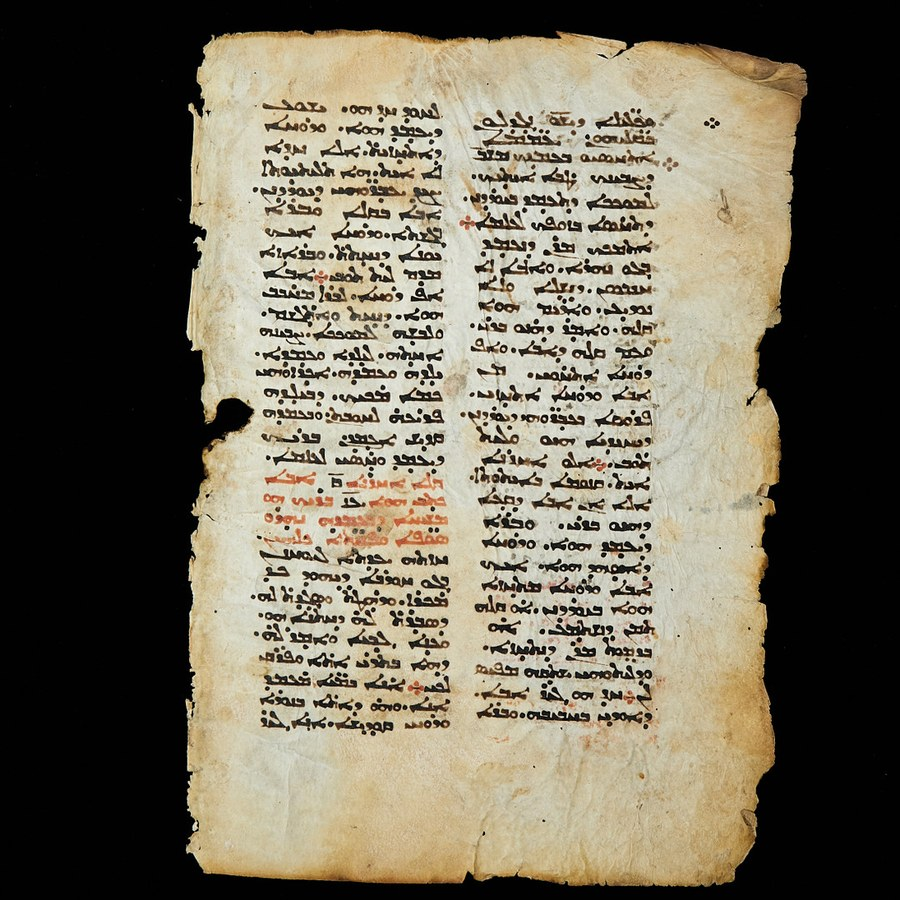

11th-century Syriac liturgical manuscript text page.
Quick Summary
In Lesson 1, we established the basic building blocks of Syriac
syntax. We learned that Syriac sentences do not strictly require a “to
be” verb; rather, placing a subject and predicate side-by-side with a
matching independent pronoun acts as an equational sentence (e.g.,
Malkā ṭāb hū — “The king [is] good”). We also looked at the
absolute, construct, and emphatic states of nouns, with the emphatic
ending in ā (Alaph) acting as the default dictionary
form.
5-Question Warm-Up Drill
(Answers in Section 9)
In Indo-European languages like English and Greek, the “present tense” is a fully conjugated finite verb (e.g., “I walk”, περιπατῶ). Participles are verbal adjectives (e.g., “the walking man”).
In Aramaic and Syriac, the active participle stepped in to take over the function of the present tense almost entirely. A Syriac speaker didn’t say “I write” as a finite verb; they literally said “Writing [am] I.”
Cross-Linguistic Comparison
The Peal Stem
Semitic verbs exist in different “stems” (or binyanim) that modify their meaning. The basic, un-augmented ground-stem is called the Peal. Almost all basic actions occur in the Peal.
Forming the Participle
For a strong tri-consonantal root (C-C-C) like k-t-b (write), the active participle is formed by inserting a long ā after the first consonant, and an e after the second.
Enclitic Pronouns
To turn “writing” into “I am writing,” Syriac places a personal pronoun after the participle. In pronunciation, the pronoun loses its stress and fuses with the participle as an enclitic; in writing, the pronoun may either stand separately (analytic spelling: ܟܬܒ ܐܢܐ kāteb ʾenā, pronounced kāteb-nā) or be written attached as a single fused word (synthetic spelling: ܟܬܒܬ kātbat, ܟܬܒܝܢܢ kātbīnan, ܟܬܒܝܬܘܢ kātbītūn).
1. The Participle + Enclitic Present Tense Paradigm
| Person | Independent | Analytic Spelling | Fused Enclitic Form | Translation |
|---|---|---|---|---|
| 1 c.sg. | ʾenā | ܟܬܒ ܐܢܐ (kāteb-nā / f. ܟܬܒܐ ܐܢܐ kātbā-nā) | ܟܬܒܢܐ (kātebnā / f. kātbānā) | I am writing |
| 2 m.sg. | ʾant | ܟܬܒ ܐܢܬ (kāteb ʾant) | ܟܬܒܬ (kātbat) | You (m) are writing |
| 2 f.sg. | ʾant(y) | ܟܬܒܐ ܐܢܬܝ (kātbā ʾant(y)) | ܟܬܒܬܝ (kātbat(y)) | You (f) are writing |
| 3 m.sg. | hū | ܟܬܒ (kāteb) / ܟܬܒ ܗܘ (kāteb-hū) | kāteb | He is writing / writes |
| 3 f.sg. | hī | ܟܬܒܐ (kātbā) / ܟܬܒܐ ܗܝ (kātbā-hī) | kātbā | She is writing / writes |
| 1 c.pl. | ḥnan | ܟܬܒܝܢ ܚܢܢ (kātbīn ḥnan) | ܟܬܒܝܢܢ (kātbīnan / f. kātbānan) | We are writing |
| 2 m.pl. | ʾantūn | ܟܬܒܝܢ ܐܢܬܘܢ (kātbīn ʾantūn) | ܟܬܒܝܬܘܢ (kātbītūn) | You (m.pl) are writing |
| 2 f.pl. | ʾantēn | ܟܬܒ̈ܢ ܐܢܬܝܢ (kātbān ʾantēn) | ܟܬܒ̈ܬܝܢ (kātbātēn) | You (f.pl) are writing |
| 3 m.pl. | hennōn | ܟܬܒܝܢ (kātbīn) | kātbīn | They (m) are writing |
| 3 f.pl. | hennēn | ܟܬܒ̈ܢ (kātbān) | kātbān | They (f) are writing |
Notes: In the 3rd person singular, the participle usually stands alone without an enclitic. In the 3rd person plural, the plural ending (-īn / -ān) is sufficient; no enclitic is added. The feminine plural participle, like other feminine plural forms, is normally written with the plural dots (syāmē): ܟܬܒ̈ܢ.
2. The Peal Active Participle Declension (Root
k-t-b)
| Gender/Num | Estrangela | Transliteration |
|---|---|---|
| Masc. Sg. | ܟܬܒ | kāteb |
| Fem. Sg. | ܟܬܒܐ | kātbā |
| Masc. Pl. | ܟܬܒܝܢ | kātbīn |
| Fem. Pl. | ܟܬܒ̈ܢ | kātbān |
When the active participle drives the sentence, the word order is very fluid, but Verb-Subject-Object (VSO) or Subject-Verb-Object (SVO) are both common.
Verbs
| Root | Peal Participle (m.sg.) | Meaning |
|---|---|---|
| ܟ.ܬ.ܒ | kāteb | to write |
| ܐ.ܙ.ܠ | ʾāzel | to go |
| ܐ.ܡ.ܪ | ʾāmer | to speak, say |
| ܫ.ܡ.ܥ | šāmaʿ* | to hear |
| ܚ.ܙ.ܝ | ܚܙܐ (ḥāzē) | to see |
| ܥ.ܒ.ܕ | ʿābed | to do, make |
| ܢ.ܛ.ܪ | nāṭer | to keep, guard |
| ܪ.ܕ.ܦ | rādep | to pursue |
| ܫ.ܒ.ܩ | šābeq | to leave |
| ܢ.ܦ.ܩ | nāpeq | to go out |
Adverbs, Prepositions and Other Words
| Word | Transliteration | Meaning |
|---|---|---|
| ܗܫܐ | hāšā | now |
| ܕܝܢ | dēn | but, then, however |
| ܬܡܢ | tammān | there |
| ܠܥܠ | lʿel | above |
| ܗܪܟܐ | harkā | here |
| ܥܡ | ʿam | with |
| ܥܠ | ʿal | upon, against |
| ܡܢ | men | from |
| ܐܝܬ | ʾīt | there is / are |
| ܬܠܡܝܕܐ | talmīdā | disciple (pl. ܬܠܡܝ̈ܕܐ talmīdē) |
*Note: Roots ending in gutturals (like ʿAyn) change the
e to an a (šāmaʿ instead of šāmeʿ). For
III-Yodh roots like ḥ-z-y (“see”), the m.pl. participle is ḥāzēn (ܚܙܝܢ),
contracting to ḥāzēnan (“we see”) or ḥāzētūn (“you [m.pl.]
see”).
Preparation
Narrative note: The present tense (participle + enclitics) is used here to create an immediate, action-oriented dialogue as Yukhannan prepares his disciples.
Sentence 1
ܝܘܚܢܢ ܐܡܪ ܠܬܠܡܝ̈ܕܐ ܕܐܝܬ ܠܗ Yūḥannan ʾāmer l-talmīdē d-ʾīt leh. Yūḥannan (John) ʾāmer (is-speaking) l- (to) talmīdē (the-disciples) d- (that) ʾīt (there-are) leh (to-him). → Yukhannan is speaking to the disciples that are his (lit. “that there are to him”, previewing Lesson 4’s possession idiom).
Sentence 2
ܐܙܠ ܐܢܐ ܡܢ ܗܪܟܐ ʾāzel-nā men harkā. ʾāzel (going) -nā (am-I) men (from) harkā (here). → “I am going from here.”
Sentence 3
ܐܙܠ ܐܢܐ ܠܡܠܟܘܬܐ ܕܒܝܫܐ ܐܡܪ ܗܘ ʾāzel-nā l-malkūtā d-bīšā, ʾāmer-hū. ʾāzel (going) -nā (am-I) l- (to) malkūtā (the-kingdom) d- (of) bīšā (the-evil-[one]), ʾāmer (says) -hū (he). → “I am going to the kingdom of the evil one,” he says.
Sentence 4
ܬܠܡܝ̈ܕܐ ܫܡܥܝܢ ܡܠܬܐ ܕܝܘܚܢܢ talmīdē šāmʿīn meltā d-Yūḥannan. talmīdē (the-disciples) šāmʿīn (are-hearing) meltā (the-word) d- (of) Yūḥannan (John). → The disciples hear the word of Yukhannan.
Sentence 5
ܗܢܘܢ ܐܡܪܝܢ ܚܙܝܢ ܚܢܢ ܡܠܟܐ ܒܝܫܐ ܬܡܢ hennōn ʾāmrīn: ḥāzēn ḥnan malkā bīšā tammān. hennōn (they) ʾāmrīn (are-saying): ḥāzēn (seeing) ḥnan (are-we) malkā (a-king) bīšā (evil) tammān (there). → They say: “We see an evil king there.”
Sentence 6
ܝܘܚܢܢ ܥܒܕ ܢܘܗܪܐ ܒܐܪܥܐ Yūḥannan ʿābed nūhrā b-ʾarʿā. Yūḥannan (John) ʿābed (is-making/doing) nūhrā (light) b- (in) ʾarʿā (the-earth). → Yukhannan makes light in the earth.
Sentence 7
ܟܬܒ ܐܢܐ ܡܠܬܐ ܕܐܠܗܐ ܐܡܪ ܗܫܐ kāteb-nā meltā d-ʾAlāhā, ʾāmer hāšā. kāteb (writing) -nā (am-I) meltā (the-word) d- (of) ʾAlāhā (God), ʾāmer (says-[he]) hāšā (now). → “I am writing the word of God,” he says now.
Exercise 1: Participle Identification
Identify the gender and number of the following participles.
Exercise 2: Conjugation Drill
Combine the root ʿ-b-d (to do, make) with the correct pronoun/enclitic to form the present tense for:
Exercise 3: Translation Drill (Syriac → English)
Translate the following present tense clauses.
Exercise 4: Production Drill (English → Syriac)
Render the following active present sentences into Syriac transliteration.
Exercise 5: Reading Comprehension
Re-read Section 7 and answer:
Section 1 Warm-Up
Exercise 1: Participle Identification
Exercise 2: Conjugation Drill
Exercise 3: Translation Drill
Exercise 4: Production Drill
Exercise 5: Reading Comprehension
PARTICIPLE + ENCLITIC COMBINATIONS (Masc. Root k-t-b)
| English | Participle | Analytic Spelling | Fused Enclitic Form |
|---|---|---|---|
| I write (m) | kāteb | ܟܬܒ ܐܢܐ (kāteb ʾenā) | ܟܬܒܢܐ (kātebnā) |
| You write (m) | kāteb | ܟܬܒ ܐܢܬ (kāteb ʾant) | ܟܬܒܬ (kātbat) |
| He writes | kāteb | ܟܬܒ (kāteb) | kāteb / kāteb-hū |
| We write (m) | kātbīn | ܟܬܒܝܢ ܚܢܢ (kātbīn ḥnan) | ܟܬܒܝܢܢ (kātbīnan) |
| You all write (m) | kātbīn | ܟܬܒܝܢ ܐܢܬܘܢ (kātbīn ʾantūn) | ܟܬܒܝܬܘܢ (kātbītūn) |
| They write (m) | kātbīn | ܟܬܒܝܢ (kātbīn) | kātbīn |
The following 31 words supplement this lesson’s vocabulary. Most are nouns built on verbal roots, so that you begin to see how one root yields a family of words.
| Syriac (Estrangela) | Transliteration | Part of Speech | Meaning | Notes |
|---|---|---|---|---|
| ܫܒܬܐ | šabbtā | f. noun | sabbath, week | pl. šabbē |
| ܠܒܘܫܐ | lbūšā | m. noun | garment, clothing | from root l-b-š (to wear) |
| ܕܘܟܪܢܐ | dūkrānā | m. noun | memory, remembrance | from root d-k-r (to remember) |
| ܦܓܥܐ | pegʿā | m. noun | encounter, meeting | from root p-g-ʿ (to meet) |
| ܨܒܥܐ | ṣebʿā | f. noun | finger | body part |
| ܦܘܠܚܢܐ | pūlḥānā | m. noun | labor, service | from root p-l-ḥ (to serve) |
| ܢܛܘܪܬܐ | nṭūrtā | f. noun | watching, custody | from root n-ṭ-r (to guard) |
| ܒܣܝܡܘܬܐ | bassīmūtā | f. noun | kindness, gentleness | from root b-s-m (to be pleasant) |
| ܠܒܟܬܐ | lebkātā | f. noun | capture, hold | from root l-b-k (to hold) |
| ܡܣܟܢܘܬܐ | meskēnūtā | f. noun | poverty, want | abstract noun |
| ܦܠܓܘܬܐ | palgūtā | f. noun | division, half | from root p-l-g (to divide) |
| ܩܠܦܬܐ | qlāptā | f. noun | shell, bark, scale | |
| ܪܘܓܙܐ | rūgzā | m. noun | rage, wrath | from root r-g-z (to be angry) |
| ܝܕܥܬܐ | ʾīdaʿtā | f. noun | knowledge | from root y-d-ʿ (to know) |
| ܟܦܪܐ | kaprā | m. noun | village, hamlet | place noun |
| ܦܬܚܐ | petḥā | m. noun | opening, commencement | from root p-t-ḥ (to open) |
| ܓܡܝܪܘܬܐ | gmīrūtā | f. noun | completion, perfection | from root g-m-r (to complete) |
| ܥܘܫܢܐ | ʿūšnā | m. noun | strength, might | from root ʿ-š-n (to be strong) |
| ܫܦܥܐ | šepʿā | m. noun | abundance, flow | from root š-p-ʿ (to overflow) |
| ܠܚܡܐ | laḥmā | m. noun | bread, food | staple item |
| ܡܫܘܚܬܐ | mšūḥtā | f. noun | measure, standard | from root m-š-ḥ (to measure) |
| ܫܠܡܘܬܐ | šalmūtā | f. noun | completeness, concord | from root š-l-m (to be whole) |
| ܕܪܓܐ | dargā | m. noun | step, stair, rank | from root d-r-g |
| ܣܝܓܐ | syāgā | m. noun | enclosure, hedge | from root s-y-g (to fence) |
| ܫܘܚܠܦܐ | šūḥlāpā | m. noun | change, alteration | from root š-ḥ-l-p (to change) |
| ܕܒܝܩܘܬܐ | dbīqūtā | f. noun | clinging, adhesion | from root d-b-q (to cling) |
| ܩܕܝܫܘܬܐ | qaddīšūtā | f. noun | holiness, sanctity | from root q-d-š (to be holy) |
| ܪܒܘܬܐ | rabbūtā | f. noun | greatness, majesty | from root r-b-b (to be great) |
| ܥܪܛܠܝܘܬܐ | ʿarṭlāyūtā | f. noun | nakedness, exposure | from root ʿ-r-ṭ-l (to be naked) |
| ܕܘܒܪܐ | dubbārā | m. noun | conduct, way of life | from root d-b-r (to lead) |
| ܪܘܡܐ | rawmā | m. noun | height, elevation | from root r-w-m (to be high) |